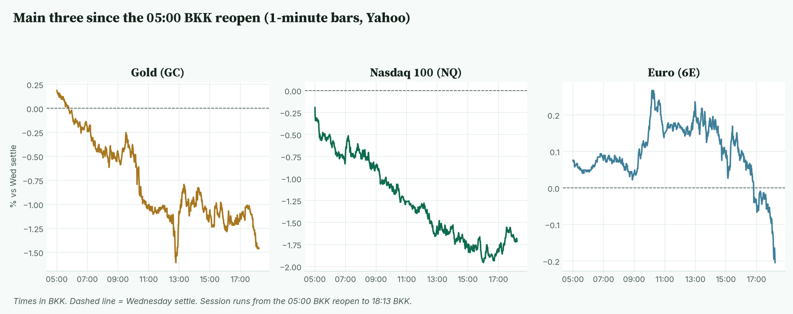
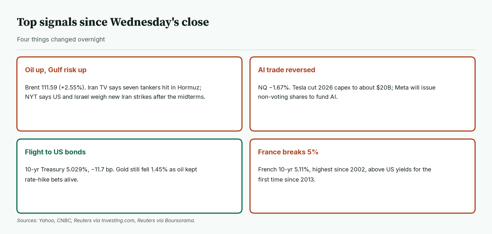
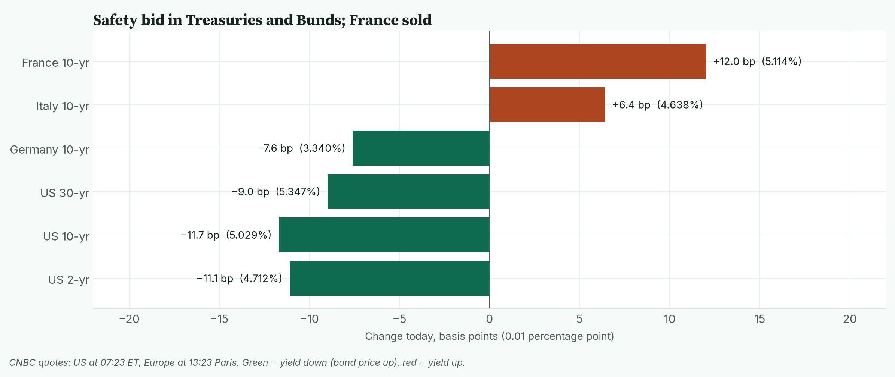
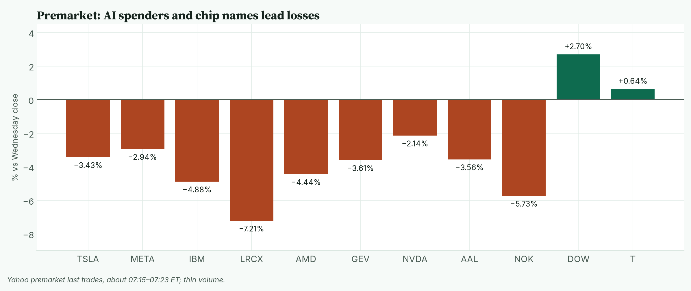
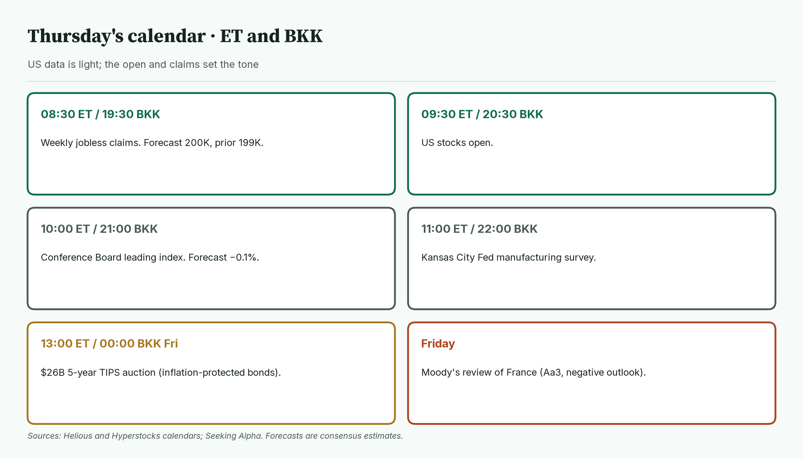
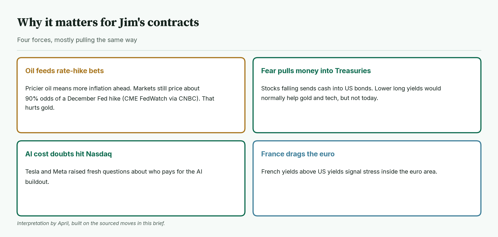
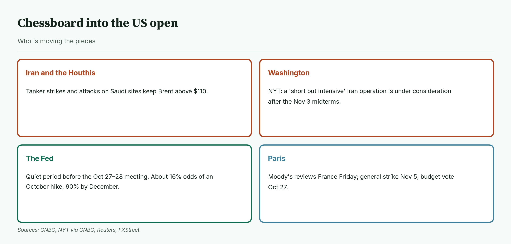
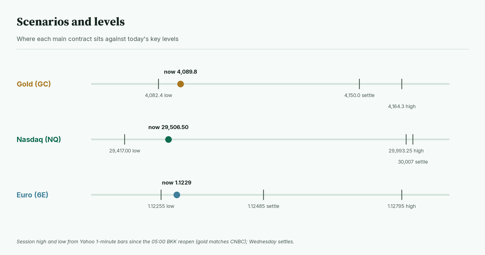
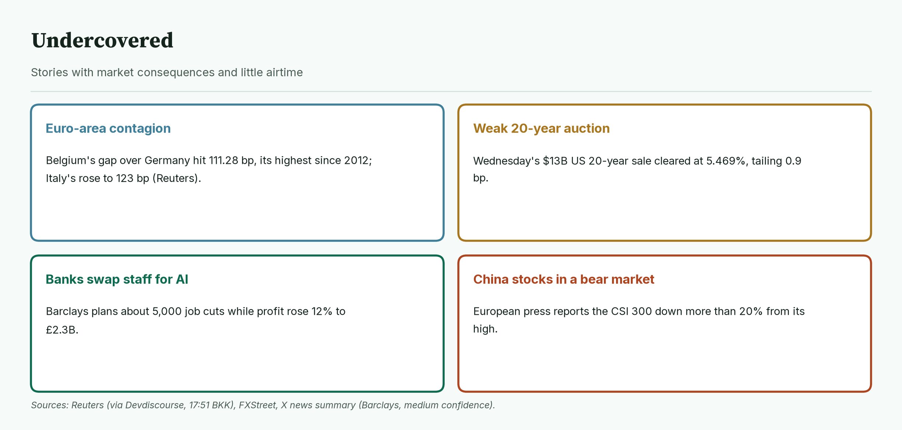
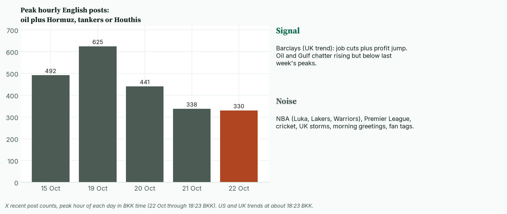

April · Market Intel, pre-NY · Thu Oct 22, 2026 · ~18:40 BKK / ~07:40 ET
Headline: a broad risk-off morning. Brent oil is up 2.5% to $111.59 on new Gulf tanker strikes, Nasdaq futures are down 1.7% as Tesla and Meta revived AI-spending doubts, and gold is down 1.45% to 4,089.8 even as money floods into US Treasuries.
Today's pre-London brief did not run, so this brief measures from Wednesday's settle and yesterday's pre-London read. So what: jobless claims at 08:30 ET / 19:30 BKK and the US open at 09:30 ET / 20:30 BKK decide whether this becomes a full selloff or a dip that gets bought.
1) Main instruments The three main contracts since the 05:00 BKK reopen, as a % move from Wednesday's settle. Gold opened above its settle, at about 4,158–4,164, then slipped below it before 06:00 BKK and kept falling. Nasdaq opened just under its settle and drifted lower; the euro held above its settle until about 16:50 BKK. |
(Quotes are from the Yahoo Finance futures feed at 18:12–18:13 BKK (07:12–07:13 ET), about 10 minutes delayed. CNBC shows the same gold futures level. Today's ranges run from the 05:00 BKK reopen to 18:13 BKK, on 1-minute bars.)
- Gold futures (GC, Dec): 4,089.8, −1.45%, at 18:12 BKK / 07:12 ET. Driver: pricier oil keeps the Fed (the US central bank) on track to raise rates, and gold pays no interest. It settled Wednesday at 4,150.0. Today's range is 4,082.4 (12:48 BKK) to 4,164.3 (at the 05:00 BKK reopen), so it sits near the low. CNBC shows the same high and low. Spot gold has already broken the $4,073 Oct 14 low that a Reuters chart analyst had flagged as the target. It is $4,064.38, −1.84%, with a low of $4,060.51 (CNBC, 07:29 ET / 18:29 BKK). The same analyst's next zone is $4,036–4,066 (Reuters via FXBus).
- Nasdaq 100 futures (NQ): 29,506.50, −1.67%, at 18:13 BKK / 07:13 ET. Driver: AI-spending worries came back after Tesla and Meta results (Reuters via Investing.com). It settled Wednesday at 30,007.00 after a strong AI day. Today's low is 29,417.00 at 16:01 BKK; the high was 29,993.25 at the 05:00 BKK reopen. Yesterday's pre-London read was 29,896.75.
- Euro futures (6E, Dec): 1.1229, −0.17%, at 18:13 BKK / 07:13 ET. Driver: France's 10-year bond yield jumped above the US 10-year for the first time since 2013 (Reuters via Boursorama). It settled at 1.12485. It hit 1.12795 at 10:16 BKK, then fell to 1.12255 at 18:13 BKK, today's low. Spot euro is 1.1206, −0.23% (CNBC, 07:23 ET).
- Takeaway: all three main contracts are near today's lows into the US morning.
Context. The dollar index (DXY, the dollar against six major currencies) is 101.75, −0.03% (Yahoo, 18:12 BKK), flat because the yen is rallying while the euro slips. The 10-year US yield (what the government pays to borrow for 10 years) is 5.029%, down 11.7 basis points (CNBC, 07:23 ET; a basis point is 0.01 percentage point). That is a big one-day drop, confirmed against CNBC's Wednesday close of 5.146%. The VIX (the "fear gauge" built from S&P 500 option prices) is 18.22, +9.23% versus Wednesday's 16.68 close (Cboe extended hours via Yahoo, 18:08 BKK). US oil (CL, December) is 98.88, +1.78%. S&P 500 futures (ES) are 7,719.75, −1.03% (18:13 BKK). Bitcoin is $81,804, −2.64% since 00:00 UTC (Yahoo, 18:23 BKK).
2) Top signals Four overnight changes. Oil, AI doubts and France hit risk; US bonds caught the safety money. |
- Gulf tanker strikes. Iran's state TV says seven tankers caught fire in Hormuz (AP). Brent is 111.59, +2.55% (Yahoo).
- Strike talk. The New York Times reports the US and Israel are weighing a "short but intensive" Iran operation after next month's midterms (via CNBC).
- AI reversal. Wednesday's AI rally faded. NQ is −1.67% (Reuters; Yahoo).
- Takeaway: oil fear and AI fear are back at the same time.
3) Rates, FX and oil Today's change in 10-year and other government yields. US and German yields fell on safety buying; French and Italian yields rose. |
- US yields fell across the board. 2-year 4.712%, −11.1 bp. 10-year 5.029%, −11.7 bp. 30-year 5.347%, −9.0 bp. (CNBC, 07:23 ET)
- Mentor: bond prices rise when yields fall. When stocks wobble, big funds park cash in Treasuries, which pushes yields down.
- France hit a 24-year high. The French 10-year is 5.114%, +12.0 bp (CNBC, 13:23 Paris). Reuters had an intraday peak of 5.1415%, the highest since 2002. The France-Germany gap later hit 173.58 bp, the widest since November 2011 (Reuters via Devdiscourse, 17:51 BKK).
- Germany 3.340%, −7.6 bp. Italy 4.638%, +6.4 bp. (CNBC)
- The yen jumped. The dollar is 156.70 yen, −0.90% (CNBC, 07:23 ET). That is a classic safety move.
- Oil: Brent 111.59, +2.55%; December WTI 98.88, +1.78% (Yahoo, 18:12–18:13 BKK). Brent hit 112.68 at 15:58 BKK on the feed.
- Oil drivers: the Iranian tanker claim comes from state TV and is not independently confirmed (AP). Houthi attacks in Saudi Arabia led the US to order some diplomats to leave its missions there (CNBC).
- Takeaway: the bond market is in fear mode, but oil keeps the Fed hawkish, and that is what is hurting gold.
4) Premarket earnings Premarket moves at about 07:15–07:23 ET versus Wednesday's close. Tech and chips are lower; Dow Inc. and AT&T are up. |
- Tesla: −3.4% premarket. It cut its 2026 capex (spending on factories and equipment) forecast to about $20B, from more than $25B. Free cash flow was $1.53B, against an expected cash burn. Revenue was $28.05B. (Company filing; Reuters via Investing.com)
- Meta: −2.9%. Revenue was $64.6B against $63.34B expected (AP). It approved a new non-voting share class for "capital raising" to fund AI. (FXStreet summary; Reuters)
- IBM: −4.9% despite beating forecasts and raising its software revenue outlook. (Reuters via Investing.com)
- Lam Research: −7.2%, after guidance that was only in line (FXStreet). AMD −4.4%, Micron −3.2%, Nvidia −2.1%. (Yahoo)
- Honeywell: +0.1%. Adjusted EPS (profit per share, excluding one-offs) was $2.27, up 34%, on sales of $5.0B. It raised its full-year outlook. (Company release)
- Still to report before the bell: Lockheed Martin, Blackstone, American Airlines, Comcast, General Dynamics. (Hyperstocks calendar)
- Takeaway: investors are punishing anything that raises the cost of AI, even when profits beat.
5) Today's calendar (ET and BKK) Today's scheduled events in both time zones. Claims are the only data that can move markets. |
- 08:30 ET / 19:30 BKK: weekly jobless claims. Forecast 200K, prior 199K. (Helious calendar, Dow Jones poll via CNBC)
- 09:30 ET / 20:30 BKK: US stocks open.
- 10:00 ET / 21:00 BKK: Conference Board leading index. Forecast −0.1%. (Helious)
- 11:00 ET / 22:00 BKK: Kansas City Fed manufacturing survey.
- 13:00 ET / 00:00 BKK Friday: $26B 5-year TIPS auction (bonds that protect against inflation). (Helious)
- Friday: Moody's review of France, now rated Aa3 with a negative outlook. A downgrade is expected (Reuters via Boursorama).
- Takeaway: a low claims number keeps hike bets alive; a jump would help gold and bonds.
6) Why it matters Four forces and how they reach the main contracts. Today they mostly point down for gold, Nasdaq and the euro. |
Oil is beating safety demand in the fight over gold.
- Normally, falling yields help gold.
- But markets still price about 90% odds of a December Fed hike, and 16% for next week (CME FedWatch via CNBC).
- Pricier oil keeps those hike bets in place. That outweighs the safety bid.
- Mentor: the 2-year yield falling 11 bp tells you some traders are trimming hike bets. If claims come in weak, that trimming could speed up and finally help gold.
- Takeaway: gold needs oil to cool or US data to soften before it can bounce.
7) Chessboard Four players into the US open. Iran, the Houthis and Washington are setting the oil price. |
- Iran and the Houthis keep raising the cost of Gulf oil. (AP; CNBC)
- Washington is signaling a post-midterm option. The midterms are Nov 3. (NYT via CNBC)
- The Fed is in its quiet period before the Oct 27–28 meeting.
- Paris has no easy exit. Unions called a general strike for Nov 5, and the budget's revenue bill returns on Oct 27 (Reuters; FXStreet).
- Takeaway: the next two weeks are packed with dates that can move oil and the euro.
8) Scenarios and levels Where each main contract sits against today's range since the 05:00 BKK reopen. Gold and the euro are near their lows; Nasdaq is a bit above its low. |
- Gold (GC) up case: claims are weak and oil eases. Then 4,150.0 (Wednesday's settle) and 4,164.3 (today's high, set at the reopen).
- Gold down case: a break below 4,082.4 (today's low). Spot has already broken its $4,073 Oct 14 low, so Reuters' $4,036–4,066 spot zone is the next reference.
- Nasdaq (NQ) up case: buyers step in at the open. Then 29,993.25 (today's high, set at the reopen) and 30,007 (settle).
- Nasdaq down case: below 29,417 (today's low), Tuesday's low of 29,391.75 is next (Yahoo 1-minute bars).
- Euro (6E) up case: French yields calm. Then 1.12485 (settle) and 1.12795 (today's high).
- Euro down case: below 1.12255 (today's low), 1.1200 is the round number.
- Takeaway: watch 4,082.4 on gold and 29,417 on Nasdaq at the open.
9) Undercovered Four stories with market consequences and little airtime. |
- France's stress is spreading. Belgium's gap over German yields hit 111.28 bp, its highest since 2012. Italy's rose to 123 bp. (High: Reuters via Devdiscourse, 17:51 BKK)
- The US 20-year auction was weak. Wednesday's $13B sale cleared at 5.469%, tailing (selling at a higher yield than expected) by 0.9 bp. (Medium: FXStreet)
- Banks are replacing staff with AI. Barclays plans about 5,000 job cuts as quarterly profit rose 12% to £2.3B. (Medium: X news summary, not checked against the filing)
- China's CSI 300 is reported in a bear market, down more than 20%. (Low-medium: European press via FXStreet)
10) What's trending on X (~18:23 BKK) Peak hourly English posts on oil plus Hormuz, tankers or the Houthis, plus today's trends sorted into signal and noise. Oil chatter is rising but below last week's peaks. |
- US: Good Thursday, Luka, Lakers, Haiti, Cardi, Warriors.
- UK: Barclays, Storm Boelo, Storm Austen, Harry Brook, Bournemouth, Windrush.
- Signal: Barclays is the only market item on the trend lists. X's summary also flags bank stocks on their longest losing streak since 2008 (medium, X summary).
- Data point: oil plus Gulf posts peaked at 330 an hour (17:00–18:00 BKK), below 625 on Oct 19 and 492 on Oct 15. (X post counts)
- Noise: NBA, football, cricket, UK storms, morning greetings and fan tags.
Bottom line
Oil and AI fears hit together, and bonds are the only winner. For Jim: gold is at 4,089.8, just above today's 4,082.4 low. Nasdaq is at 29,506.50 and needs 29,417 to hold. The euro is at its 1.12255 low. Spot gold has already broken its $4,073 Oct 14 low. Interpretive note: if claims are soft and Brent can't hold $111, this morning's selling may be overdone. That is a read, not a forecast.
Confidence: Futures levels: high for direction, medium-high for the exact tick (Yahoo feed; gold matches CNBC). Session ranges: high (Yahoo 1-minute bars from the 05:00 BKK reopen; gold's high and low match CNBC). Bond yields and euro-area gaps: high (CNBC; French peak and gaps from Reuters). Spot gold zone: medium (Reuters chart analysis via FXBus). Iran tanker claim: unverified state-TV report. NYT strike report: medium (single report via CNBC). Earnings: high for Tesla and Honeywell (company documents), medium for Meta details (FXStreet summary). Premarket moves: medium (thin trading). Fed odds: medium. X summaries: medium.
Charts: /workspace/april-charts/2026-10-22/pre-ny-{scoreboard,main3,delta,rates,earnings,calendar,why,chess,scenarios,under,xsplit}.png |